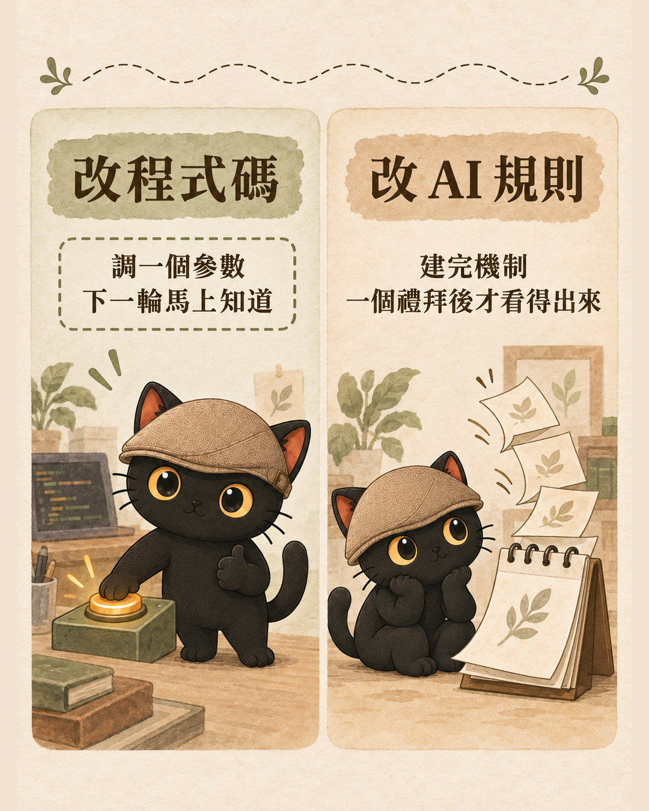
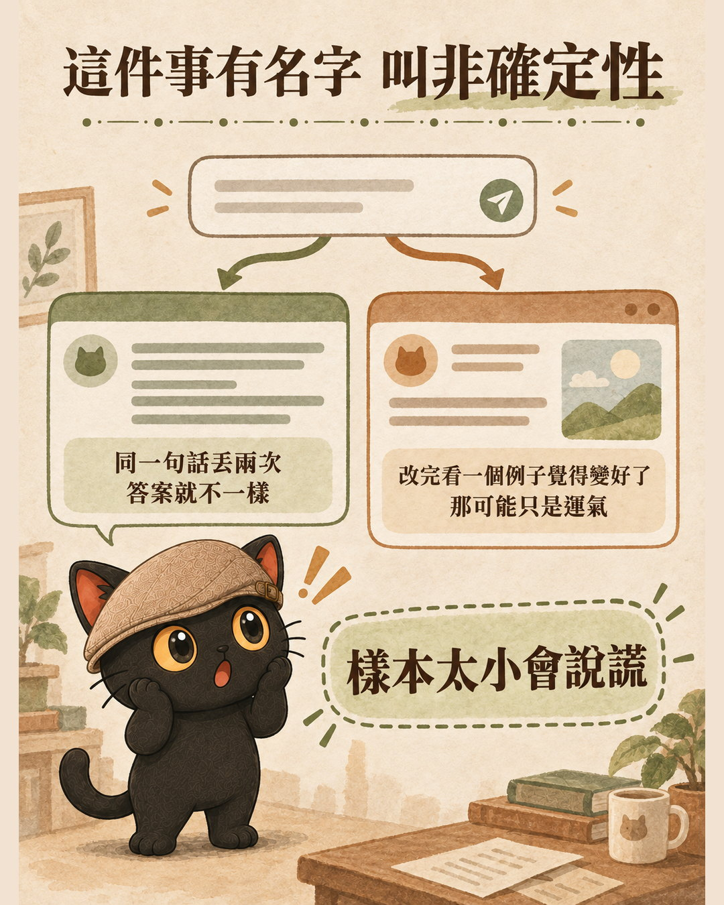
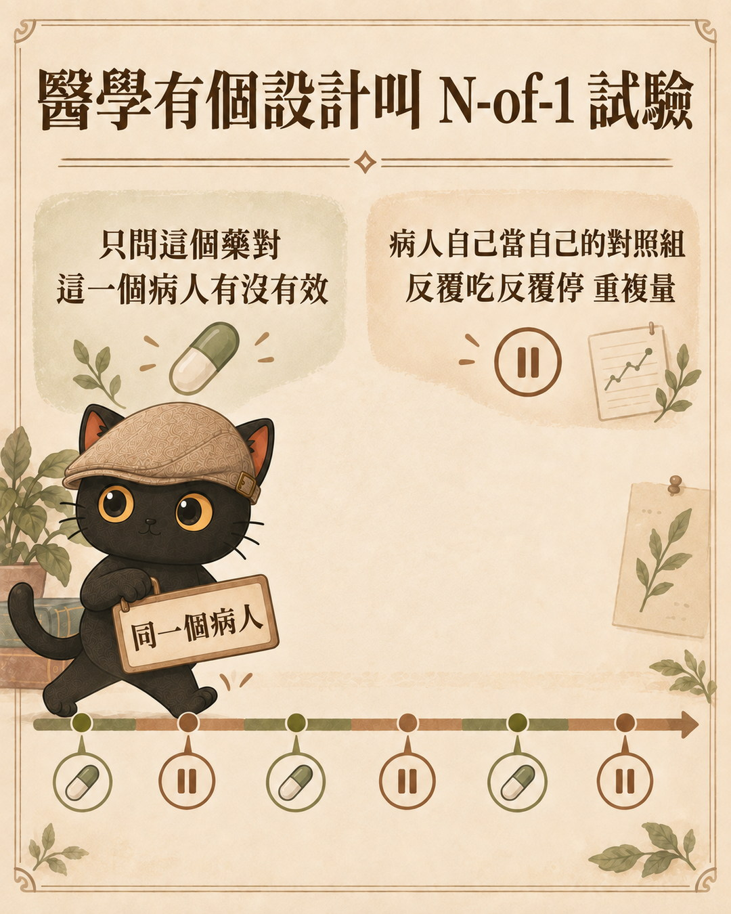
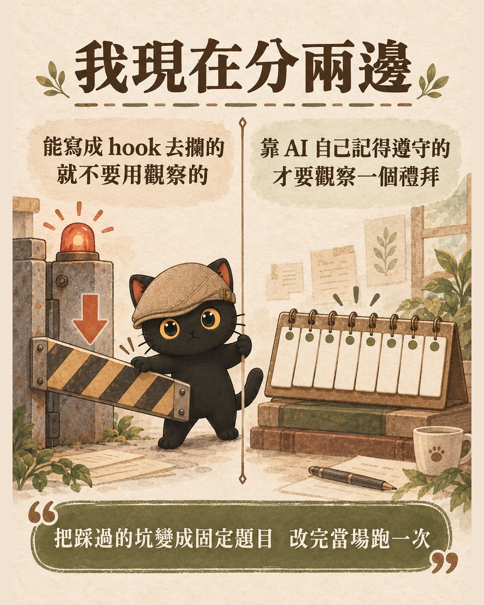

這篇在講什麼
我改完 AI 的規則之後，常常不知道到底有沒有效。改程式碼可以立刻知道，改規則不行，要等一個禮拜再回來看，而一個禮拜後回來看，剩下的通常只有印象。這篇講為什麼會這樣，以及怎麼把「等一個禮拜」縮短成「改完當場就知道」。做法分兩步：先分清楚哪些機制根本不用觀察，剩下真的要觀察的，用一組固定題目去驗。
- 已經在寫自己的 AI 規則檔、提示詞或知識庫，改完卻不知道有沒有變好的人
- 每次調完就憑印象判斷「好像有比較好」，但說不出證據的人
- 想把交給 AI 的工作變成可驗收的，不用每次都自己重看一遍的人
- 一個判斷：這條規則該掛機械攔截，還是該當病人觀察
- 一組回歸題組的寫法，把一週級的回饋壓成分鐘級
- 觀察期驗收要事先寫死的三個欄位
改完一條規則，一個禮拜後我只記得印象
先說一句，如果你沒有在寫什麼規則檔，把底下講的「規則」換成「你每次都要重複交代 AI 的那句話」，整篇一樣讀得通。差別只在你把它記在腦子裡，我把它寫成檔案。
我建完一個機制之後，會照常寫工作日記，然後一個禮拜之後再回來看：這個新機制有沒有降低錯誤率、有沒有提升準確性或效率。
問題是一個禮拜之後回來看，剩下的通常只有印象。我記得「好像比較少出錯了」，但我說不出少了幾次、哪一種錯變少、是這個機制的功勞還是那一週剛好比較順。
改程式碼不會這樣。我調一個參數，下一輪就有結果，我立刻知道這個參數調得對不對。改 AI 的規則沒這回事。一個知識或一個機制，有時候不是你改完它就會跳出來給你看，要看一陣子才知道。

為什麼改 AI 的規則跟改程式不一樣
後來我查才知道，這件事有名字，叫非確定性。
同一句話丟兩次，AI 給的答案可能不一樣。它生成的時候本來就帶著抽樣，就算你把抽樣關掉，也不保證每次拿到一模一樣的字。
已經被追出來的原因之一在服務端：你的請求會跟其他人的請求被打包在一起算，包的方式不同，數值就會出現極小的差異，兩個分數很接近的候選字可能因此翻面，後面整句話跟著岔開。這是部分部署環境已經確認的來源，不是唯一的解釋。
所以最容易騙到自己的情況是這樣：改完規則，看一個例子，覺得變好了，就當成改進成功。那個「變好」可能只是這次剛好。樣本數只有一個的時候，運氣跟效果長得一模一樣。

- 規則檔越寫越長，AI 有照做嗎？：你寫的規則大部分沒在執行
那篇講的是規則寫了不等於被執行，這篇接著講：那要怎麼知道到底執行了沒。
醫生怎麼判斷一個藥有效，那套剛好借得過來
我一直用醫生的比喻講這件事：我先開一個藥，你回去吃一兩個禮拜，我們再複診，再看看這個方向是不是對的。
後來我發現這個比喻背後有東西。醫學裡有一種正式的試驗設計叫 N-of-1 trial，中文叫單一受試者試驗。它問的是「這個治療對這一個病人有沒有效」，不問「這個治療對一群人平均有沒有效」。做法是同一個病人自己當自己的對照組，事先規劃好幾個治療期跟對照期反覆交叉，重複測量。如果前一次的藥效可能還沒退乾淨，中間就安排洗脫期，要不要留、留多久，看那個藥退得多快。
這不是偏方。牛津實證醫學中心 2011 年那套證據分級裡，問「這個治療有沒有效」的時候，隨機化的 N-of-1 試驗跟隨機對照試驗的系統性回顧並列在第一級。

我的處境剛好就是 N=1。只有我一個使用者，只有我這一套知識庫。別人的規則寫得好不好，跟我的規則對我有沒有效，是兩件事。
那三個要求是：
這是我最常違反的。我常常一輪同時改規則、加 hook、改技能包，一個禮拜後就算錯誤率真的降了，我也歸不了因，不知道是哪一項在生效，下次也複製不了。
看一次不算數。單次觀察分不出效果與運氣，這是上一段講的那件事在方法論上的對應解法。
改完不能當天就下結論。觀察期要多長，取決於這種行為多久會出現一次。
有些規則根本不用觀察，先把它們挑出來
知道要觀察之後，還有一件更重要的事：需要觀察的只有一部分規則。
更前面還有一刀：這條規則需要存在嗎
在分兩邊之前其實還有一刀。我另外做了一個技能包專門問這件事，叫它省話一哥。它只看一份規則或機制是不是話太多、太肥、過度設計，判斷方式是四個問題，一條規則要通過才留得下來。
- 這段需要存在嗎？沒人會用到就刪。
- 上面已有的規則或工具能涵蓋嗎？重複就刪。
- 能不能一句講完？贅述就縮。
- 解釋有沒有比本體還長？為了替它辯護而寫的散文，刪。
它也有絕不砍的紅線：安全規則、破壞性操作的保護、必要的脈絡與為什麼、能讓人或 AI 正確執行的關鍵步驟。這套方法論我叫它減法許可協議。
這一刀要放在最前面，因為規則會越寫越多，每一條都要驗，題組就會膨脹到你不想跑。刪掉一條不必存在的規則，等於同時省掉一條要觀察的、一題要跑的。第二問特別好用，它剛好回答了「同一個行為要不要驗兩次」。
接著才是分兩邊
我的規則分四層：hook（機械攔截）、憲法（跨代理通用的硬規則）、技能包（特定情境的操作步驟）、記憶（各家 AI 自己的暫存）。這四層裡面只有第一層是確定性的。
hook 講白話就是門口的警衛。它是一段程式，在 AI 真的動手之前先看一眼：這個動作違反規定嗎？違反就擋下來，沒違反就放行。它不需要 AI 記得什麼，也不會心情不好就漏掉。擋到就是擋到，跟改程式碼一樣，改完當下就知道對錯，重跑一百次結果都一樣。
其他三層沒有警衛。它們是寫給 AI 看的字，AI 要自己讀到、自己記得、自己願意照做。
同一條規則這次遵守了，下次可能漏掉。那才是需要觀察的部分。
| 這條規則 | 該掛哪裡 | 怎麼驗 |
|---|---|---|
| 存檔的檔名一定要有時間戳 | hook 機械攔截 | 改完當下丟一個沒時間戳的檔名，擋到就是對的 |
| 刪東西一律搬進回收資料夾，不准直接刪 | hook 機械攔截 | 當下試一次危險指令，被擋就是對的 |
| 寫標籤之前要先讀字典逐個比對 | 規則層，靠 AI 自己遵守 | 要觀察，因為它可能憑記憶亂寫，而且亂寫不會報錯 |
| 給連結時要補上「如果點不開怎麼辦」 | 規則層，靠 AI 自己遵守 | 要觀察 |
| 語氣、判斷品質、有沒有腦補 | 規則層，靠 AI 自己遵守 | 要觀察，而且要人看 |

所以我現在改規則之前會先問一句：這件事能不能寫成程式判斷？能，就寫成 hook，當程式驗；不能，才進規則層，當病人觀察。
這一刀切下去，真正需要觀察的東西會少掉一大半。
- AI 寫的東西我怎麼確認它是對的？：抓到 AI 偷懶之後，我把它寫進流程規則
那篇講的是抓到問題怎麼變成規則，這篇是它的下一步：規則寫下去之後，怎麼確認它真的在生效。
怎麼把驗收從一個禮拜壓到五分鐘
剩下真的要觀察的部分，還是可以縮短。
業界處理這件事的做法叫 eval。Hamel Husain 跟 Shreya Shankar 那套講法是：最重要的動作是錯誤分析，把實際跑過的紀錄一條條看過、標出問題、分類、計數，先搞清楚到底在錯什麼，指標才長得出來。只憑感覺看幾個例子就判斷好壞，能拿到的信息最少。
他們還記錄了一個現象：修好一種錯，另一種錯就冒出來，像打地鼠。這正是為什麼改完要跑全部題目，不能只驗剛改的那條。
我的錯誤分析素材是現成的。我踩過的坑就是題目。
| 題目 | 驗什麼 | 怎麼算過 |
|---|---|---|
| 叫它建一個新檔案 | 檔名有沒有時間戳 | 有就過 |
| 叫它寫一段帶標籤的筆記 | 有沒有先讀字典再寫標籤 | 有讀就過 |
| 叫它交付一份文件 | 有沒有補「連結點不開怎麼辦」 | 有補就過 |
| 叫它部署一個網頁 | 有沒有先同步再部署 | 順序對就過 |
| 叫它同時改三個機制 | 有沒有提醒一次只改一個 | 有提醒就過 |
三個原則：
他們提的設計原則是每個 eval 只檢查一個行為。系統會用很多種方式壞掉，一題同時驗三件事，壞了你不知道是哪一件。
單次會說謊。三次都過才算過，三次過兩次就是還沒穩。
規則之間會互相打架。只驗你剛改的那條，看不到被你順手撞倒的那幾條。一種常見做法是把這件事掛進自動流程，叫 CI evals，用途是在上線前擋住已知的退步。
這樣做的話，改完規則就不用等一個禮拜。改完當場跑一遍題組，幾分鐘內可以看到兩件事：新規則有沒有生效、有沒有順手弄壞別的。
一個禮拜的觀察期還是要留。它的角色會變成確認長期效果，而回饋管道多了一條當下就能跑的。
- 怎麼設計讓兩個 AI 互審？：三種不同程度的審查機制設計
題組驗得出「有沒有照做」，驗不出「做得好不好」。品質那一層要另一套設計，那篇講的就是它。
觀察期開始那天，就要先寫好到期要看什麼
我的規則裡本來就有觀察期的結構。凡是換儲存位置、換供料來源、換服務供應商這種切換，都要登記進一個切換登記簿，舊的留七天不刪，到期驗收過了才處置。
那個形狀本來就是臨床試驗：先留一段時間，到期再判斷。登記簿跟七天觀察期已經在跑，缺的是一格「驗收要拿什麼當證據」。
沒有那一格，七天後回來看就只剩印象。所以我要補的是這三件事，在建機制那天就寫好：
指定一種來看，例如標籤有沒有亂寫、檔名有沒有漏時間戳。一次一種，不要看「整體有沒有變好」。
工作日記的哪一段、hook 的攔截紀錄、哪個資料夾的檔名清單。要能翻得到，不是靠回憶。
七天內這種錯誤出現幾次以下算過。數字寫死，不然到期那天會自己放水。
這三格要在建機制當天寫。七天後才想「我當初要看什麼」，就已經來不及了。
這套方法哪一部分我已經在用，哪一部分還在建
已經在跑、確定有效的：機械攔截那一層。寫成 hook 的規則改完當下就有答案，這部分我天天在用。
設計上預期能做到的：規則層的回饋從一週壓到分鐘級，七天後回來看的時候手上有數字。這是這套設計要換到的東西，我還在把它跑滿一輪。
就算跑滿了也不保證的，有三件事要講清楚。
今天就能開始：從你最近踩的三個坑各寫一題
不用先建系統。從三題開始就好。
第一步：翻你最近的三個坑
上禮拜 AI 哪裡讓你重做了一次？哪句話你已經講過三遍它還是漏？那就是題目，不用另外想。
第二步：每個坑寫成一題，格式三行
第三步：先問這題能不能不用觀察
如果這個行為寫得出程式判斷（檔名格式、指令關鍵字、有沒有某個欄位），去掛機械攔截，這題就從觀察名單上劃掉。剩下的才留在題組裡。
第四步：改完規則當場跑一遍，每題三次
記下來哪題過、哪題沒過。這份紀錄就是你七天後回來看的證據。
三題跑順了再加。題組的價值在於一直跑得下去，寫得完整是後面的事。
接著可以看這幾篇
前三篇是本文中途提過的，後兩篇是同一條線再往前後延伸。
- 規則檔越寫越長，AI 有照做嗎？：你寫的規則大部分沒在執行
先看這篇會知道問題有多大：規則寫了不等於被執行。本文是它的下一步，講怎麼驗到底執行了沒。 - AI 寫的東西我怎麼確認它是對的？：抓到 AI 偷懶之後，我把它寫進流程規則
那篇是「抓到問題怎麼變成規則」，本文是「規則寫下去之後怎麼確認它在生效」。兩篇接在一起就是一整圈。 - 怎麼設計讓兩個 AI 互審？：三種不同程度的審查機制設計
本文的題組驗得出「有沒有照做」，驗不出「做得好不好」。品質那一層要另一套設計，就在那篇。
- 如何訓練自己的 AI 員工：員工＋顧問框架
往前一步：規則要拿來驗之前，得先有規則。這篇講規則從哪裡長出來。 - AI 一直停下來要授權，怎麼讓它順順跑完？：迴圈護欄的五條規則
往後一步：本文第一刀說「能寫成 hook 的就別靠觀察」，那篇講的就是護欄要怎麼設計才不會綁死自己。
我是江江教練
我是江昱德，江江教練。我在做的事情是幫人把散在各處的資料變成能被 AI 讀懂的知識庫，然後把重複的工作交給 AI 跑完。
流水的 AI 工具，鐵打的知識庫。